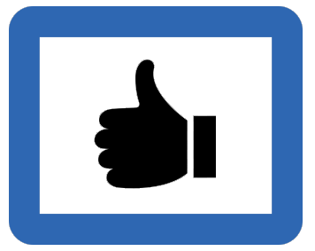

Self Care Activities
CMHC Business Hours:Monday thru Friday, 8:00am - 5:00pm
Phone: (512) 471-3515 - Student Services Building 5th Floor
What is Self-Care?
College can be really exciting, but it can also at times be stressful. Practicing self-care can help you manage the ups and downs of college life. Self-care refers to activities and practices that can help you to reduce your stress and enhance your overall well-being: essentially, proactively taking care of yourself. Self-care is essential in order to be successful inside and outside of the classroom.
Self-care is more than an occasional treat, but a way of living each day that incorporates practices and behaviors that help you feel refreshed, re-energized, and rested. Self-care helps you deal with the daily stresses in your life—from academic pressures, to interpersonal relationships, to future plans, and others. Everyone deals with stress differently, and everyone's preference for practicing self-care is different as well.
Why is Self-Care Important?
There are many reasons that self-care is important. Research shows that self-care helps to keep you healthy, helps you recharge and helps to improve your overall well-being.
There are lots of ways to practice self-care. What works for you may not work for someone else. The important thing is to make self-care a priority in your schedule. This could mean blocking off time to workout or spending some time unplugged from technology once in awhile. Here are some ideas for self-care:
 When it feels like your to do list is a mile long, it's easy to feel like you don't have time to practice self-care. Oftentimes we view self-care activities as not being productive, but it's important to shift this way of thinking by broadening what we view as productive. Studies show that if we prioritize taking care of our mind, body and spirit, it will actually help us be more productive academically and professionally in the long run.
Add it to your calendar or to do list: Block off time in your day to practice self-care.
To explore practicesfor mindfulness, please stop by one of our MindBody Labs. We have two campus locations: Student Services Building (SSB) and the Student Activity Center (SAC).
Considering exploring one of the groups or classes offered by CMHC to practice some of these skills with your fellow peers. Additionally, download the Thrive at UT iPhone app to gain some skills to enhance your well-being.
How Can I Practice Self-Care?
Sleep: Sleep is essential to overall health and is closely linked to academic success. For more information on how to get optimal sleep, check out UHS' website here.
Napping: Napping throughout the day can improve energy levels. Check out UT's Nap Map to identify places on campus that are great for taking naps.
Exercise: Research shows that exercise can relieve stress, improve your mood, and help you sleep better. For more information about exercise, check out UHS' website here.
Do something you love: Carve out time for your passions and hobbies, whether that's hiking, crafting, dancing, reading for fun, etc. Hobbies can provide you an outlet for managing stress and can increase happiness levels.
Hang out with friends and family: Research shows that spending time with loved ones is the number one determinant of happiness. Take time to connect with a friend or a family member.
Practice self-compassion: Self-compassion is treating yourself like you would treat your best friend. Talk to yourself the way you would talk to someone you care about; replace self-critical thoughts with compassionate thoughts. Learn more about how to be kind to yourself here.
Practice mindfulness: Being in the present moment can help to reduce stress. Practice mindfulness by noticing your five senses; what do you see, hear, taste, feel, and smell right now? CMHC also offers classes on mindfulness.
Practice gratitude: One simple way to practice gratitude is by writing down 3 things you're grateful for everyday. Remembering to find things, experiences and people in your life that you're grateful can have powerful effects on your mood.
Unplug from technology: Sometimes the best way to recharge is to take a break from technology. Research shows that downtime replenishes the brain's stores of attention and motivation, encourages productivity and creativity, and is essential to both achieve our highest levels of performance and simply form stable memories in everyday life.
Practice deep breathing: Take five minutes to practice deep breathing. In just those few minutes you can lower your blood pressure and heart rate, thus lowering the physical affects of stress. Go here for a guided breathing exercise.
Journaling: Journaling can have a lot of benefits. Writing can help you process your feelings, ignite creativity centers in the brain, and help you be in the present moment. Take a few minutes each day to journal. Go here for more information about writing as a method of self-care.
Practice meditation: Taking a few minutes to clear your mind of various stressors can be a great way to practice self-care. Research shows that meditation can improve your focus, immunity, and overall mental well-being. For a seated meditation practice go here.
Practice yoga: Yoga has pronounced effects on your emotional well-being and can help lower anxiety and stress. UT Rec Sports also offers yoga classes for students.
Spend time in nature: Research shows that spending time in nature can have remarkable benefits to human health.
How do I make time for self-care?
Here are some tips to help prioritize self-care:
Add self-care into your day: Find small windows of time to practice self-care. For example, if you arrive to class or a meeting 10 minutes early, how can you use those 10 minutes to practice self-care?
Make it a habit: Create a routine so practicing self-care becomes a habit.
Remember that you deserve self-care: People often think that
Resources